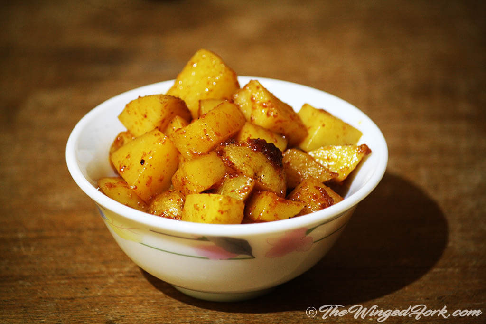

Go back to the bottom
Potatoes are rich in vitamin C, which is an antioxidant. Potatoes were a life-saving food source in early
times because the vitamin C prevented scurvy. Another major nutrient in potatoes is potassium, an
electrolyte which aids in the workings of our heart, muscles, and nervous system.
Ingredients:
- 1kg of potatoes
- oil
- sugar
- salt
- chilli powder
- water
Steps of how to prepare isombe:
- Wash and clean the potatoes before you cut them into 1/2 inch cubes.
Soak them in water for a while, this helps to remove the excess starch.
- In a frying pan or kadai, add a little oil and heat it. Then, add in the
diced potatoes, chilli powder and salt. Also add in a few teaspoons of sugar and mix well.
- Add in a little water and allow the potatoes to cook for about 15 minutes on a medium flame.
As it cooks, the water will evaporate and you will be left with some yummy masala potaoes.
- It takes only 15 minutes which makes it the perfect in-a-hurry-dish!
Return to the top